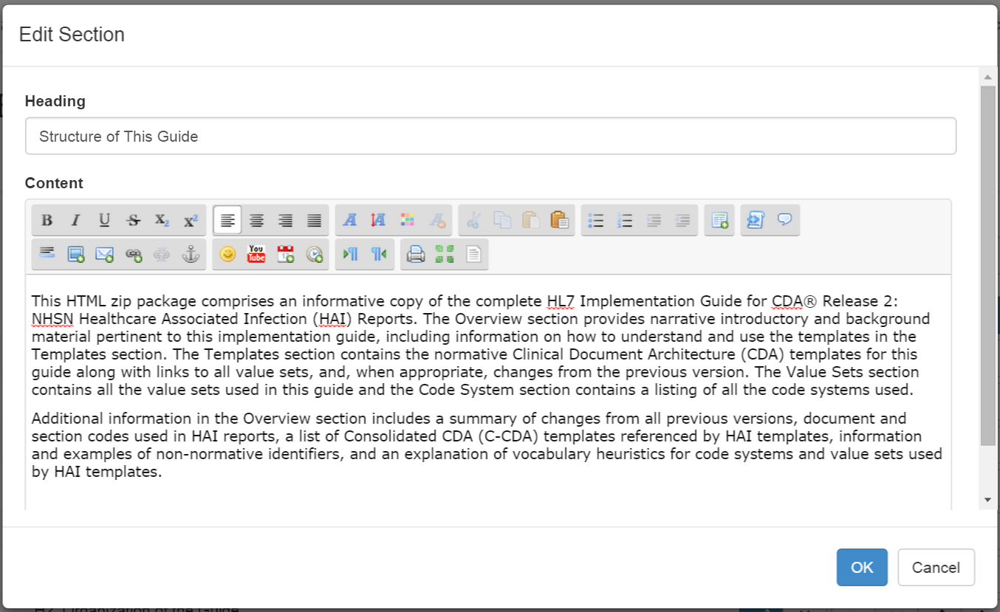

Version 2.19.0
Version 2.19.0
Web-based IG
Trifolia can now generate a web-based IG. You can view the web-based IG in real-time while the IG is being developed, or you can generate a JSON snapshot of the data in the IG and generate a URL in Trifolia that represents that specific point-in-time snapshot of the IG. The IG can be viewed directly within the Trifolia web application, or it can be downloaded for offline viewing.
Create Sections for the "Overview" of an IG
You can either specify plain HTML or use the wysiwyg editor to create the content of the section in the Edit Implementation Guide screen


Associate a URL with a JSON Snapshot Export
After exporting a JSON snapshot of an implementation guide, you can upload the snapshot as a file for the implementation guide, and associate a URL that displays the web-based IG for the snapshot.

Web-Based IG Features
All web-based IGs have the following features:
- An overview section that shows either the HTML or well-defined sections associated with the implementation guide
- The templates section contains both an filtered alphabetical list and a hierarchy view of templates
- Viewing a template/profile displays the following information
- UML Relationship Diagram
- Relationships
- Constraints Table
- Narrative Constraints
- Samples (if any)
- Value Sets (if any)
- An appendix section of all value sets used by the implementation guide
- An appendix section of all code systems used by the implementation guide
- Options for the web-based IG allow the user to change the template/profile display mode from "Paneled" to "Tabbed" mode, where each of the major sections of data are shown in tabs instead of vertical panels
- Breadcrumbs are always displayed showing a chronological history of how you got to the page you are viewing
- The web-based IG can always be downloaded for viewing offline
- Users can search the entire IG (include templates, constraints, value sets and code systems) for a specific term
Value Set Editing
The value set editing screens have been updated so that members of a value set are edited separately from the value set meta-data.
The "Value Set Member" editing screen supports paging and searching (specifically for large value sets). When adding/updating/deleting members from a value set, it is clearly shown what changes are pending until the Save button is selected.
Development Log
TRIF-902 |
Allow concepts to be paged editing viewing and editing large value sets |
TRIF-890 |
Show related templates when editing a template in the validations tab |
TRIF-888 |
Collapsible value sets |
TRIF-887 |
Show all value sets in the web-based IG |
TRIF-886 |
Web-based IG Searching |
TRIF-885 |
View templates in tabbed mode |
TRIF-884 |
View templates in web-based IG |
TRIF-883 |
Two different listing formats for templates |
TRIF-882 |
Show bread-crumbs of user's navigation |
TRIF-881 |
Entering "Volume 1" information as an Overview |
TRIF-880 |
Allow uploading JSON to an implementation guide's files |
TRIF-879 |
Allow exporting an implementation guide in JSON format |